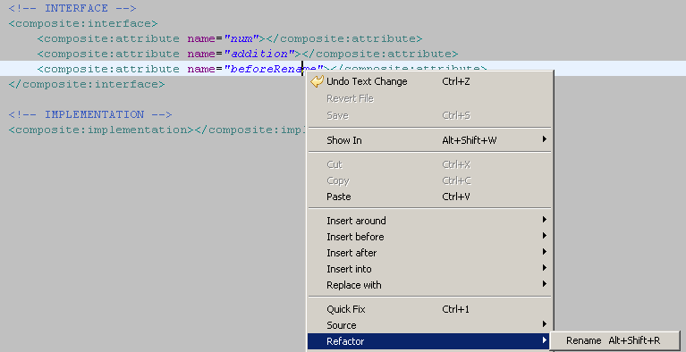
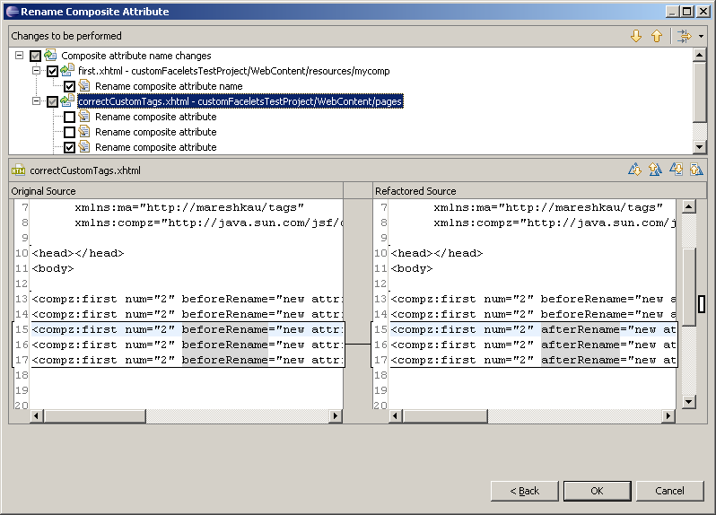

General
- Quick fix to create JSF 2 composite folder:

- Quick fix to create JSF 2 composite component:

- Quick fix to create attributes in JSF 2 composite component:


Refactoring for JSF 2 components is available now.
For instance you can rename the component or its attributes.
All the related changes will be shown on the Preview page.


Several classes could be selected and moved to another column at once.
Classes could be moved from one column to another by dragging, pushing the button or by "Alt + Left Arrow" and "Alt + Right Arrow" key combinations.
In addition you can change the order of selected classes by moving them up and down.

Now VPE visual templates could be exported to/imported from the external file.

It is a very convenient way to share setting among team members.


Editor

Text strings could be externalized via Externalize Strings Dialog which will put additional resource bundle value and replace the text on the page by EL expression.

The dialog is available from the VPE toolbar or from the context menu.

Templates
jbpm:dataform, jbpm:datacell, tf:cancelButton,
tf:saveButton; tf:transitionButton